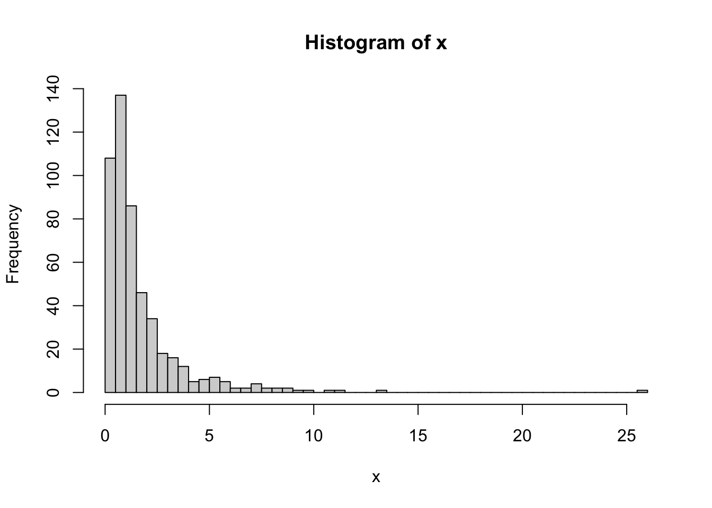
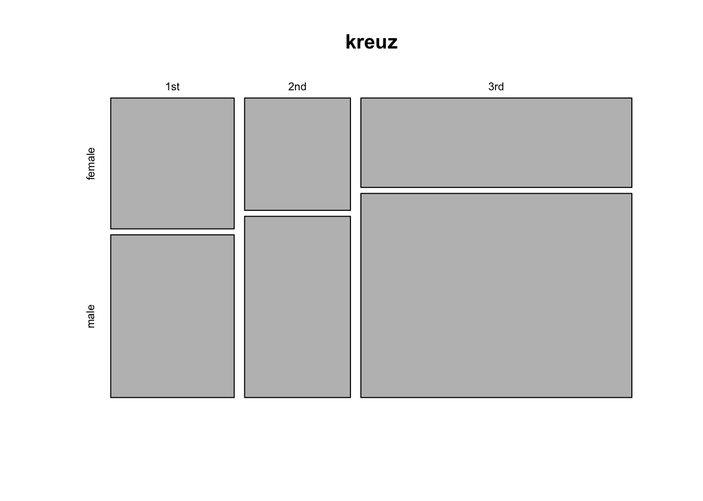
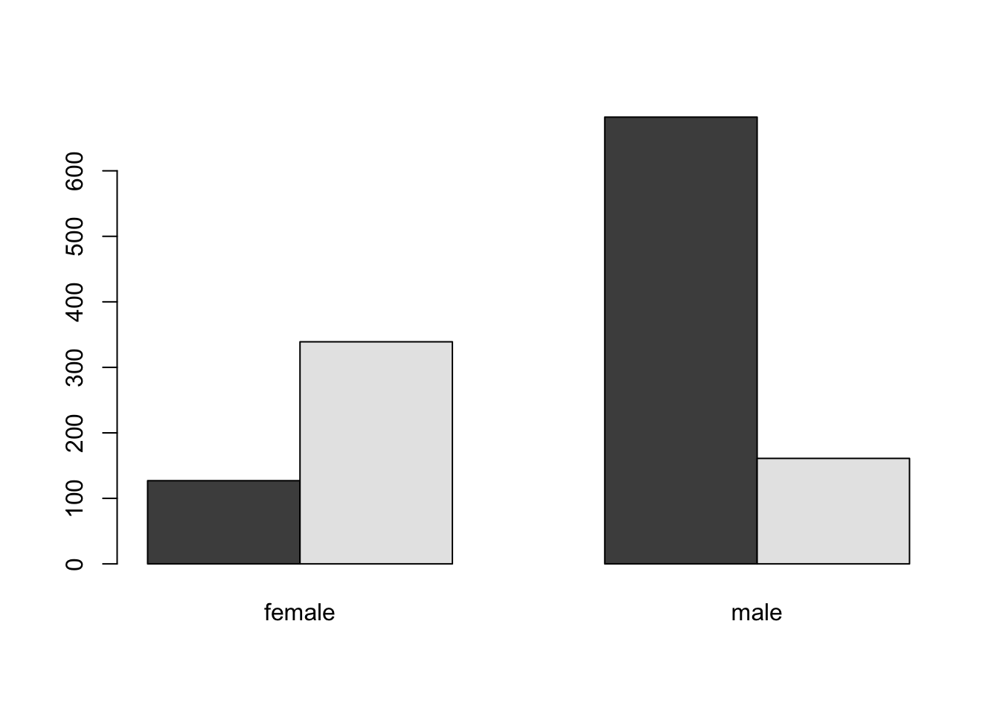
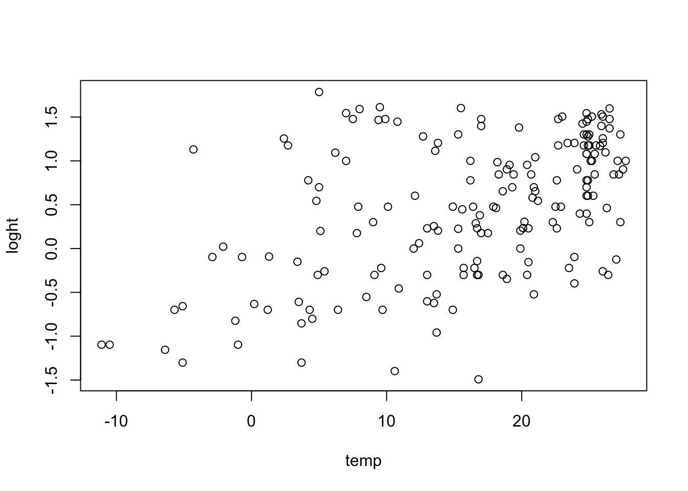
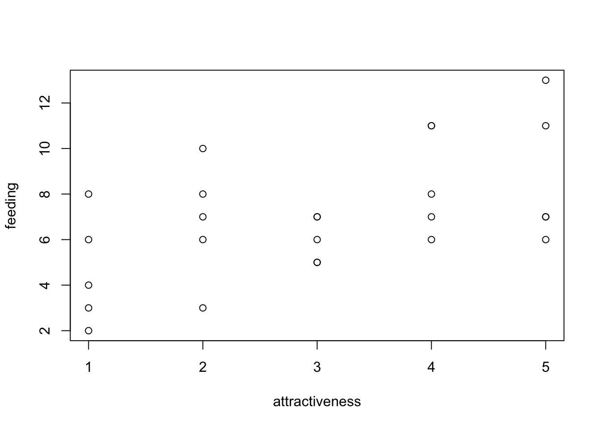
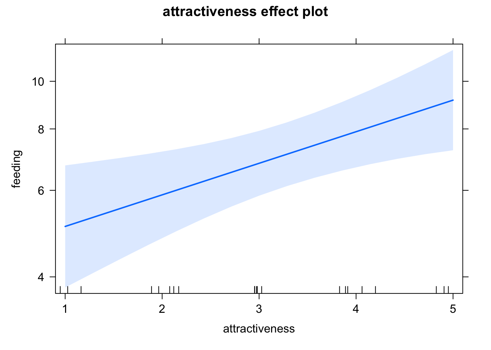

2+2[1] 4sqrt(5)[1] 2.236068R als Taschenrechner
2+2[1] 4sqrt(5)[1] 2.236068Grafiken erstellen in R
curve(exp, 0, 5)
barplot(c(1,2,3))
Variablen erstellen in R
var1 = 5
var1 = c(1,2,3,4)
str(var1) num [1:4] 1 2 3 4mean(var1)[1] 2.5var2 = factor(c("rot", "gruen", "blau","rot"))
str(var2) Factor w/ 3 levels "blau","gruen",..: 3 2 1 3mean(var2)Warning in mean.default(var2): argument is not numeric or logical: returning NA[1] NAtable(var2)var2
blau gruen rot
1 1 2 dat = data.frame(var1 = var1, var2 = var2)
dat$var1[1] 1 2 3 4str(dat)'data.frame': 4 obs. of 2 variables:
$ var1: num 1 2 3 4
$ var2: Factor w/ 3 levels "blau","gruen",..: 3 2 1 3# das ist ein Kommentar
# Hilfe von Funktionen über ?name oder Maus auf Funktion und F1 drücken
# Mehr Hilfe im Internet oder KI x = rlnorm(500)
hist(x, breaks = 50)
y = replicate(2000,mean(rlnorm(2000)))
hist(y, breaks = 50)
Um unseren ersten echten Datensatz zu untersuchen benutzen wir Daten der Passigierliste der Titanic. Die Daten sind im EcoData package enthalten. Um das EcoData package zu installieren, führen Sie den folgenden Code aus:
install.packages("devtools")
devtools::install_github(repo = "TheoreticalEcology/EcoData",
dependencies = F, build_vignettes = T)Jetzt sollten Sie das Package laden und auf die Daten zugreifen können
library(EcoData)
str(titanic)'data.frame': 1309 obs. of 14 variables:
$ pclass : int 1 1 1 1 1 1 1 1 1 1 ...
$ survived : int 1 1 0 0 0 1 1 0 1 0 ...
$ name : chr "Allen, Miss. Elisabeth Walton" "Allison, Master. Hudson Trevor" "Allison, Miss. Helen Loraine" "Allison, Mr. Hudson Joshua Creighton" ...
$ sex : chr "female" "male" "female" "male" ...
$ age : num 29 0.917 2 30 25 ...
$ sibsp : int 0 1 1 1 1 0 1 0 2 0 ...
$ parch : int 0 2 2 2 2 0 0 0 0 0 ...
$ ticket : chr "24160" "113781" "113781" "113781" ...
$ fare : num 211 152 152 152 152 ...
$ cabin : chr "B5" "C22 C26" "C22 C26" "C22 C26" ...
$ embarked : chr "S" "S" "S" "S" ...
$ boat : chr "2" "11" "" "" ...
$ body : int NA NA NA 135 NA NA NA NA NA 22 ...
$ home.dest: chr "St Louis, MO" "Montreal, PQ / Chesterville, ON" "Montreal, PQ / Chesterville, ON" "Montreal, PQ / Chesterville, ON" ...titanic$pclass = factor(titanic$pclass)
x = table(titanic$pclass)
x
1 2 3
323 277 709 barplot(x)barplot(x, las = 2, horiz = T, col = c("darkred"))
x = table(titanic$sex)
x
female male
466 843 barplot(x)
hist(titanic$age)
hist(titanic$age[titanic$pclass == 3])mean(titanic$age, na.rm = T)[1] 29.88113median(titanic$age, na.rm = T)[1] 28var(titanic$age, na.rm = T)[1] 207.749sd(titanic$age, na.rm = T)[1] 14.4135quantile(titanic$age, na.rm = T) 0% 25% 50% 75% 100%
0.1667 21.0000 28.0000 39.0000 80.0000 boxplot(titanic$age)
# um moments zu installieren tippen Sie install.packages("moments")
library(moments)
skewness(titanic$age, na.rm = T)[1] 0.407087Außerdem hier oeinen Datensatz des Sozio-oekonomischen Panels, welches Informationen über die deutschen Haushalte sammelt.
x = EcoData::soep$einkommenj1 # Haupteinkommen der Haushalte
hist(x)
mean(x)[1] 16775.77median(x)[1] 5786.075boxplot(x)
Wenn Sie motiviert sind können Sie als Übung versuchen, weitere Kennzahlen dieser Variable oder anderer Variablen in diesem Datensatz zu erstellen.
library(effects)Loading required package: carDatalattice theme set by effectsTheme()
See ?effectsTheme for details.head(TitanicSurvival) survived sex age passengerClass
Allen, Miss. Elisabeth Walton yes female 29.0000 1st
Allison, Master. Hudson Trevor yes male 0.9167 1st
Allison, Miss. Helen Loraine no female 2.0000 1st
Allison, Mr. Hudson Joshua Crei no male 30.0000 1st
Allison, Mrs. Hudson J C (Bessi no female 25.0000 1st
Anderson, Mr. Harry yes male 48.0000 1stView(TitanicSurvival)
kreuz = table(TitanicSurvival$sex, TitanicSurvival$passengerClass)
print(kreuz)
1st 2nd 3rd
female 144 106 216
male 179 171 493barplot(kreuz)
legend("topleft", legend = c("Male", "Female"), col = c("gray", "black"), pch = 15)
kreuz = table(TitanicSurvival$passengerClass, TitanicSurvival$sex)
barplot(kreuz, beside = TRUE)
mosaicplot(kreuz)
Erinnerung boxplot, auf der X - Achse kategorische Variable
boxplot(age~passengerClass, data = TitanicSurvival)
## Mit Notch
boxplot(age~passengerClass, data = TitanicSurvival, notch = TRUE)
par(mar = c(7, 5, 3, 1))
boxplot(age~passengerClass+sex, data = TitanicSurvival, notch = TRUE, las = 2, xlab = "")
head(iris) Sepal.Length Sepal.Width Petal.Length Petal.Width Species
1 5.1 3.5 1.4 0.2 setosa
2 4.9 3.0 1.4 0.2 setosa
3 4.7 3.2 1.3 0.2 setosa
4 4.6 3.1 1.5 0.2 setosa
5 5.0 3.6 1.4 0.2 setosa
6 5.4 3.9 1.7 0.4 setosaplot(Sepal.Length~Petal.Length, data = iris)
cor(iris$Sepal.Length, iris$Petal.Length)[1] 0.8717538cor(iris$Sepal.Length, iris$Petal.Length, method = "spearman")[1] 0.8818981plot(Sepal.Length~log(Petal.Length), data = iris)
cor(iris$Sepal.Length, log(iris$Petal.Length))[1] 0.826019cor(iris$Sepal.Length, log(iris$Petal.Length), method = "spearman")[1] 0.8818981cor.test(iris$Sepal.Length, iris$Petal.Length, method = "pearson")
Pearson's product-moment correlation
data: iris$Sepal.Length and iris$Petal.Length
t = 21.646, df = 148, p-value < 2.2e-16
alternative hypothesis: true correlation is not equal to 0
95 percent confidence interval:
0.8270363 0.9055080
sample estimates:
cor
0.8717538 pca = prcomp(airquality[complete.cases(airquality),1:4], scale = TRUE)
biplot(pca)
Daten vorbereiten - wie man das Package “Ecodata” mit den Daten installiert wurde in Woche 1 erklärt
library(EcoData)
# str(titanic)
titanic$pclass = factor(titanic$pclass, labels = c("1.Kl", "2.Kl", "3.Kl"))
titanic$sex = factor(titanic$sex)
titanic$embarked = factor(titanic$embarked)
titanic$survived = factor(titanic$survived, labels = c("died", "survived"))Kreuztabelle berechnen und visualisieren
x = table(titanic$survived, titanic$sex)
x
female male
died 127 682
survived 339 161barplot(x, beside = T)
Wenn mindestens eine der Variablen binär ist kann man den prop.test machen
prop.test(x)
2-sample test for equality of proportions with continuity correction
data: x
X-squared = 363.62, df = 1, p-value < 2.2e-16
alternative hypothesis: two.sided
95 percent confidence interval:
-0.5706519 -0.4713802
sample estimates:
prop 1 prop 2
0.1569839 0.6780000 Ansonsten Chi2 Test
chisq.test(x)
Pearson's Chi-squared test with Yates' continuity correction
data: x
X-squared = 363.62, df = 1, p-value < 2.2e-16Wir schauen uns an die Altersunterschiede zwischen Geschlechtern
boxplot(age ~ sex, data = titanic, notch = T)
Sind die beiden Gruppen normalverteilt?
shapiro.test(titanic$age[titanic$sex == "female"])
Shapiro-Wilk normality test
data: titanic$age[titanic$sex == "female"]
W = 0.98164, p-value = 7.662e-05hist(titanic$age[titanic$sex == "female"])
shapiro.test(titanic$age[titanic$sex != "female"])
Shapiro-Wilk normality test
data: titanic$age[titanic$sex != "female"]
W = 0.97543, p-value = 4.661e-09Nein, also machen wir den nichtparametrischen Mann-Whitney U test, der in R mit der Funktion wilcox.test berechnet wird
wilcox.test(titanic$age[titanic$sex == "female"],
titanic$age[titanic$sex == "male"])
Wilcoxon rank sum test with continuity correction
data: titanic$age[titanic$sex == "female"] and titanic$age[titanic$sex == "male"]
W = 118038, p-value = 0.04161
alternative hypothesis: true location shift is not equal to 0Gerade noch signifikant. Mit weniger Daten (= weniger Power) würde das Ergebnis n.s.
titanic2 = titanic[sample.int(nrow(titanic), 300), ]
wilcox.test(titanic$age[titanic2$sex == "female"],
titanic$age[titanic2$sex == "male"])
Wilcoxon rank sum test with continuity correction
data: titanic$age[titanic2$sex == "female"] and titanic$age[titanic2$sex == "male"]
W = 124788, p-value = 0.9798
alternative hypothesis: true location shift is not equal to 0Hier als Beispiel noch mal das gleiche mit einem t-Test, den wir aber aufgrund des signifikanten Shapiro tests (H0 = Normalverteilung) eigentlich nicht anwenden sollten
t.test(titanic$age[titanic$sex == "female"],
titanic$age[titanic$sex == "male"])
Welch Two Sample t-test
data: titanic$age[titanic$sex == "female"] and titanic$age[titanic$sex == "male"]
t = -2.0497, df = 798.36, p-value = 0.04072
alternative hypothesis: true difference in means is not equal to 0
95 percent confidence interval:
-3.71595773 -0.08036699
sample estimates:
mean of x mean of y
28.68707 30.58523 Als letztes schauen wir uns Tests auf Korrelation an. Hierzu benutzen wir den Datensatz plantHeight im Package ecodata, und schauen auf die Korrelation zwischen Temperatur und Pflanzengröße.
#str(plantHeight)
plot(loght ~ temp, data = plantHeight)
Pearson (lineare) Korrelation
cor.test(plantHeight$loght, plantHeight$temp)
Pearson's product-moment correlation
data: plantHeight$loght and plantHeight$temp
t = 7.583, df = 176, p-value = 1.868e-12
alternative hypothesis: true correlation is not equal to 0
95 percent confidence interval:
0.3766494 0.5995652
sample estimates:
cor
0.4962426 Würden Sie erwarten, dass sich die Werte ändern, wenn wir auf einen Rangkorrelationskoeffizienten wechseln? Probieren wir es aus!
cor.test(plantHeight$loght, plantHeight$temp, method = "spearman")Warning in cor.test.default(plantHeight$loght, plantHeight$temp, method =
"spearman"): Cannot compute exact p-value with ties
Spearman's rank correlation rho
data: plantHeight$loght and plantHeight$temp
S = 511570, p-value = 1.635e-10
alternative hypothesis: true rho is not equal to 0
sample estimates:
rho
0.4557359 Laden der Daten, zur Installation des Package “EcoData” siehe Woche 1.
library(EcoData)
plantHeight$growthform2 = relevel(as.factor(plantHeight$growthform), "Tree")Beziehung Höhe gegen Temperatur
plot(loght ~ temp, data = plantHeight)
Fit lineare Regression
fit <- lm(loght ~ temp, data = plantHeight)
summary(fit)
Call:
lm(formula = loght ~ temp, data = plantHeight)
Residuals:
Min 1Q Median 3Q Max
-1.97903 -0.42804 -0.00918 0.43200 1.79893
Coefficients:
Estimate Std. Error t value Pr(>|t|)
(Intercept) -0.225665 0.103776 -2.175 0.031 *
temp 0.042414 0.005593 7.583 1.87e-12 ***
---
Signif. codes: 0 '***' 0.001 '**' 0.01 '*' 0.05 '.' 0.1 ' ' 1
Residual standard error: 0.6848 on 176 degrees of freedom
Multiple R-squared: 0.2463, Adjusted R-squared: 0.242
F-statistic: 57.5 on 1 and 176 DF, p-value: 1.868e-12Visualisierung
library(effects)
plot(allEffects(fit))plot(allEffects(fit, partial.residuals = T))plot(loght ~ growthform2, data = plantHeight, las = 2)
fit = lm(loght ~ growthform2, data = plantHeight)
summary(fit)
Call:
lm(formula = loght ~ growthform2, data = plantHeight)
Residuals:
Min 1Q Median 3Q Max
-1.32294 -0.26091 0.03608 0.24666 1.50761
Coefficients:
Estimate Std. Error t value Pr(>|t|)
(Intercept) 1.26091 0.05335 23.637 < 2e-16 ***
growthform2Fern -1.00564 0.42004 -2.394 0.01780 *
growthform2Herb -1.67510 0.08241 -20.327 < 2e-16 ***
growthform2Herb/Shrub -1.08482 0.42004 -2.583 0.01069 *
growthform2Shrub -1.09287 0.07993 -13.673 < 2e-16 ***
growthform2Shrub/Tree -0.43565 0.13157 -3.311 0.00115 **
---
Signif. codes: 0 '***' 0.001 '**' 0.01 '*' 0.05 '.' 0.1 ' ' 1
Residual standard error: 0.4166 on 162 degrees of freedom
(10 observations deleted due to missingness)
Multiple R-squared: 0.7366, Adjusted R-squared: 0.7285
F-statistic: 90.62 on 5 and 162 DF, p-value: < 2.2e-16Hier exemplarisch nur für das erste Modell
fit <- lm(loght ~ temp, data = plantHeight)
par(mfrow = c(2,2))
plot(fit)
plot(allEffects(fit, partial.residuals = T))
Was wenn Temperatur und Wuchsform beide einen Effekt haben? Visuell sehen wir das hier
plot(loght ~ temp, data = plantHeight, col = as.numeric(plantHeight$growthform2))Wie man diese multiple Regression fittet, besprechen wir nächste Woche!
library(EcoData)
#str(titanic)
titanic$fSex = factor(titanic$sex)
titanic$fPclass = factor(titanic$pclass)boxplot(age ~ fSex, data = titanic, notch = T)fit = lm(age ~ sex, data = titanic)
summary(fit)
Call:
lm(formula = age ~ sex, data = titanic)
Residuals:
Min 1Q Median 3Q Max
-30.252 -9.585 -1.687 8.415 49.415
Coefficients:
Estimate Std. Error t value Pr(>|t|)
(Intercept) 28.6871 0.7306 39.265 <2e-16 ***
sexmale 1.8982 0.9212 2.061 0.0396 *
---
Signif. codes: 0 '***' 0.001 '**' 0.01 '*' 0.05 '.' 0.1 ' ' 1
Residual standard error: 14.39 on 1044 degrees of freedom
(263 observations deleted due to missingness)
Multiple R-squared: 0.004051, Adjusted R-squared: 0.003097
F-statistic: 4.246 on 1 and 1044 DF, p-value: 0.03959Multiple Regression
fit = lm(age ~ sex + fPclass , data = titanic)
summary(fit)
Call:
lm(formula = age ~ sex + fPclass, data = titanic)
Residuals:
Min 1Q Median 3Q Max
-39.985 -7.934 -0.945 7.775 48.055
Coefficients:
Estimate Std. Error t value Pr(>|t|)
(Intercept) 37.1819 0.8925 41.659 < 2e-16 ***
sexmale 3.7203 0.8418 4.419 1.09e-05 ***
fPclass2.Kl -9.9273 1.1176 -8.883 < 2e-16 ***
fPclass3.Kl -14.9571 0.9765 -15.317 < 2e-16 ***
---
Signif. codes: 0 '***' 0.001 '**' 0.01 '*' 0.05 '.' 0.1 ' ' 1
Residual standard error: 13.01 on 1042 degrees of freedom
(263 observations deleted due to missingness)
Multiple R-squared: 0.1872, Adjusted R-squared: 0.1849
F-statistic: 80.01 on 3 and 1042 DF, p-value: < 2.2e-16library(effects)
plot(allEffects(fit))
Mit Interaktion
fit = lm(age ~ sex * fPclass , data = titanic)
summary(fit)
Call:
lm(formula = age ~ sex * fPclass, data = titanic)
Residuals:
Min 1Q Median 3Q Max
-40.113 -7.815 -0.962 7.815 48.038
Coefficients:
Estimate Std. Error t value Pr(>|t|)
(Intercept) 37.0376 1.1294 32.794 < 2e-16 ***
sexmale 3.9917 1.5489 2.577 0.0101 *
fPclass2.Kl -9.5384 1.7096 -5.579 3.08e-08 ***
fPclass3.Kl -14.8523 1.5465 -9.604 < 2e-16 ***
sexmale:fPclass2.Kl -0.6754 2.2627 -0.299 0.7654
sexmale:fPclass3.Kl -0.2147 2.0003 -0.107 0.9145
---
Signif. codes: 0 '***' 0.001 '**' 0.01 '*' 0.05 '.' 0.1 ' ' 1
Residual standard error: 13.02 on 1040 degrees of freedom
(263 observations deleted due to missingness)
Multiple R-squared: 0.1873, Adjusted R-squared: 0.1834
F-statistic: 47.94 on 5 and 1040 DF, p-value: < 2.2e-16library(effects)
plot(allEffects(fit))
Beispiel kontinuierlich
plot(loght ~ lat , data = plantHeight)plot(loght ~ NPP , data = plantHeight)fit <- lm(loght ~ lat , data = plantHeight)
summary(fit)
Call:
lm(formula = loght ~ lat, data = plantHeight)
Residuals:
Min 1Q Median 3Q Max
-1.94564 -0.48446 0.05458 0.41723 1.61132
Coefficients:
Estimate Std. Error t value Pr(>|t|)
(Intercept) 1.157797 0.108817 10.640 < 2e-16 ***
lat -0.022359 0.003059 -7.309 9.04e-12 ***
---
Signif. codes: 0 '***' 0.001 '**' 0.01 '*' 0.05 '.' 0.1 ' ' 1
Residual standard error: 0.6909 on 176 degrees of freedom
Multiple R-squared: 0.2329, Adjusted R-squared: 0.2285
F-statistic: 53.42 on 1 and 176 DF, p-value: 9.041e-12fit <- lm(loght ~ lat + NPP + temp , data = plantHeight)
summary(fit)
Call:
lm(formula = loght ~ lat + NPP + temp, data = plantHeight)
Residuals:
Min 1Q Median 3Q Max
-1.70134 -0.47284 0.03706 0.40266 1.76495
Coefficients:
Estimate Std. Error t value Pr(>|t|)
(Intercept) -0.1558922 0.5302162 -0.294 0.76911
lat -0.0023404 0.0086876 -0.269 0.78796
NPP 0.0003839 0.0001218 3.153 0.00192 **
temp 0.0191505 0.0151636 1.263 0.20837
---
Signif. codes: 0 '***' 0.001 '**' 0.01 '*' 0.05 '.' 0.1 ' ' 1
Residual standard error: 0.6729 on 168 degrees of freedom
(6 observations deleted due to missingness)
Multiple R-squared: 0.2842, Adjusted R-squared: 0.2714
F-statistic: 22.24 on 3 and 168 DF, p-value: 3.556e-12summary(aov(fit)) Df Sum Sq Mean Sq F value Pr(>F)
lat 1 24.79 24.787 54.741 6.26e-12 ***
NPP 1 4.70 4.698 10.375 0.00153 **
temp 1 0.72 0.722 1.595 0.20837
Residuals 168 76.07 0.453
---
Signif. codes: 0 '***' 0.001 '**' 0.01 '*' 0.05 '.' 0.1 ' ' 1
6 observations deleted due to missingnessVorsicht! Reihenfolge macht einen Unterschied
fit <- lm(loght ~ NPP + temp + lat, data = plantHeight)
summary(aov(fit)) Df Sum Sq Mean Sq F value Pr(>F)
NPP 1 26.37 26.367 58.231 1.66e-12 ***
temp 1 3.81 3.807 8.407 0.00424 **
lat 1 0.03 0.033 0.073 0.78796
Residuals 168 76.07 0.453
---
Signif. codes: 0 '***' 0.001 '**' 0.01 '*' 0.05 '.' 0.1 ' ' 1
6 observations deleted due to missingnessm1 <- lm(loght ~ NPP + temp , data = plantHeight)
m2 <- lm(loght ~ NPP + temp + lat , data = plantHeight)
AIC(m1)[1] 355.868AIC(m2)[1] 357.7937Binomial GLM (logischtische Regression)
library(EcoData)
fit <- glm(survived ~ age, data = titanic, family = binomial)
summary(fit)
Call:
glm(formula = survived ~ age, family = binomial, data = titanic)
Deviance Residuals:
Min 1Q Median 3Q Max
-1.1189 -1.0361 -0.9768 1.3187 1.5162
Coefficients:
Estimate Std. Error z value Pr(>|z|)
(Intercept) -0.136531 0.144715 -0.943 0.3455
age -0.007899 0.004407 -1.792 0.0731 .
---
Signif. codes: 0 '***' 0.001 '**' 0.01 '*' 0.05 '.' 0.1 ' ' 1
(Dispersion parameter for binomial family taken to be 1)
Null deviance: 1414.6 on 1045 degrees of freedom
Residual deviance: 1411.4 on 1044 degrees of freedom
(263 observations deleted due to missingness)
AIC: 1415.4
Number of Fisher Scoring iterations: 4Effekte berechnen und visualisieren
library(effects)
plot(allEffects(fit))
curve(plogis, -4,4)plogis(-0.136531)[1] 0.4659202plot(feeding ~ attractiveness, data = birdfeeding)
fit <- glm(feeding ~ attractiveness, data = birdfeeding, family = poisson)
summary(fit)
Call:
glm(formula = feeding ~ attractiveness, family = poisson, data = birdfeeding)
Deviance Residuals:
Min 1Q Median 3Q Max
-1.55377 -0.72834 0.03699 0.59093 1.54584
Coefficients:
Estimate Std. Error z value Pr(>|z|)
(Intercept) 1.47459 0.19443 7.584 3.34e-14 ***
attractiveness 0.14794 0.05437 2.721 0.00651 **
---
Signif. codes: 0 '***' 0.001 '**' 0.01 '*' 0.05 '.' 0.1 ' ' 1
(Dispersion parameter for poisson family taken to be 1)
Null deviance: 25.829 on 24 degrees of freedom
Residual deviance: 18.320 on 23 degrees of freedom
AIC: 115.42
Number of Fisher Scoring iterations: 4Effekte visualisieren
plot(allEffects(fit))
Poisson ohne Link funktion
fit <- glm(feeding ~ attractiveness, data = birdfeeding, family = poisson(link = "identity"))
summary(fit)
Call:
glm(formula = feeding ~ attractiveness, family = poisson(link = "identity"),
data = birdfeeding)
Deviance Residuals:
Min 1Q Median 3Q Max
-1.48678 -0.73750 0.00277 0.63563 1.52125
Coefficients:
Estimate Std. Error z value Pr(>|z|)
(Intercept) 3.8635 1.1153 3.464 0.000532 ***
attractiveness 1.0322 0.3672 2.811 0.004937 **
---
Signif. codes: 0 '***' 0.001 '**' 0.01 '*' 0.05 '.' 0.1 ' ' 1
(Dispersion parameter for poisson family taken to be 1)
Null deviance: 25.829 on 24 degrees of freedom
Residual deviance: 18.179 on 23 degrees of freedom
AIC: 115.28
Number of Fisher Scoring iterations: 4fit <- glm(survived ~ age, data = titanic, family = binomial)
summary(fit)
Call:
glm(formula = survived ~ age, family = binomial, data = titanic)
Deviance Residuals:
Min 1Q Median 3Q Max
-1.1189 -1.0361 -0.9768 1.3187 1.5162
Coefficients:
Estimate Std. Error z value Pr(>|z|)
(Intercept) -0.136531 0.144715 -0.943 0.3455
age -0.007899 0.004407 -1.792 0.0731 .
---
Signif. codes: 0 '***' 0.001 '**' 0.01 '*' 0.05 '.' 0.1 ' ' 1
(Dispersion parameter for binomial family taken to be 1)
Null deviance: 1414.6 on 1045 degrees of freedom
Residual deviance: 1411.4 on 1044 degrees of freedom
(263 observations deleted due to missingness)
AIC: 1415.4
Number of Fisher Scoring iterations: 4# pseudo R2 =
1 - 1411.4/1414.6[1] 0.002262124fit2 <- glm(survived ~ age + sex + factor(pclass), data = titanic, family = binomial)
summary(fit2)
Call:
glm(formula = survived ~ age + sex + factor(pclass), family = binomial,
data = titanic)
Deviance Residuals:
Min 1Q Median 3Q Max
-2.6399 -0.6979 -0.4336 0.6688 2.3964
Coefficients:
Estimate Std. Error z value Pr(>|z|)
(Intercept) 3.522074 0.326702 10.781 < 2e-16 ***
age -0.034393 0.006331 -5.433 5.56e-08 ***
sexmale -2.497845 0.166037 -15.044 < 2e-16 ***
factor(pclass)2.Kl -1.280570 0.225538 -5.678 1.36e-08 ***
factor(pclass)3.Kl -2.289661 0.225802 -10.140 < 2e-16 ***
---
Signif. codes: 0 '***' 0.001 '**' 0.01 '*' 0.05 '.' 0.1 ' ' 1
(Dispersion parameter for binomial family taken to be 1)
Null deviance: 1414.62 on 1045 degrees of freedom
Residual deviance: 982.45 on 1041 degrees of freedom
(263 observations deleted due to missingness)
AIC: 992.45
Number of Fisher Scoring iterations: 4# pseudo R2 =
1 - 982.45/1414.6[1] 0.3054927Vergleich der Modelle entweder mit AIC oder ANOVA
AIC(fit)[1] 1415.383AIC(fit2)[1] 992.4531anova(fit, fit2, test = "Chisq")Analysis of Deviance Table
Model 1: survived ~ age
Model 2: survived ~ age + sex + factor(pclass)
Resid. Df Resid. Dev Df Deviance Pr(>Chi)
1 1044 1411.38
2 1041 982.45 3 428.93 < 2.2e-16 ***
---
Signif. codes: 0 '***' 0.001 '**' 0.01 '*' 0.05 '.' 0.1 ' ' 1# test fuer jeden Parameter einzeln
anova(fit2, test = "Chisq")Analysis of Deviance Table
Model: binomial, link: logit
Response: survived
Terms added sequentially (first to last)
Df Deviance Resid. Df Resid. Dev Pr(>Chi)
NULL 1045 1414.62
age 1 3.238 1044 1411.38 0.07196 .
sex 1 310.044 1043 1101.34 < 2e-16 ***
factor(pclass) 2 118.886 1041 982.45 < 2e-16 ***
---
Signif. codes: 0 '***' 0.001 '**' 0.01 '*' 0.05 '.' 0.1 ' ' 1Kein Code in der Vorlesung besprochen